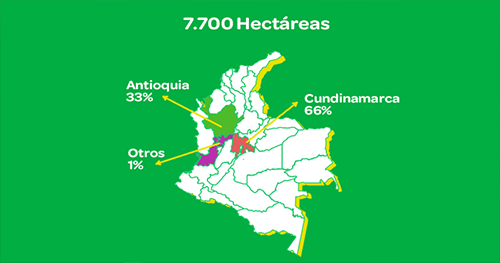

LA FLORES TRANSMITEN VIDA Y ALEGRIA

PRIMAVERA

Productos nuevos
 $85.000
$85.000

PREGUNTAS Y DUDAS
Colombia cuenta con más de 1,600 variedades de flores sembradas en 7.700 hectáreas para exportación a más de 100 mercados en el mundo, convirtiéndose en el mayor exportador de flores de corte de América y el segundo del mundo después de Holanda.
Cundinamarca es el principal productor de flor de exportación con 66% , seguido por Antioquia con 32% y el resto se localiza en departamentos del sur occidente del país con 1%.
El principal mercado de exportaciones de flores cortadas y follajes para Colombia son los Estados Unidos con el 78% de las exportaciones, seguido de Japón (4%), Reino Unido (3%), Canadá (3%), Holanda (2%), España (2%) y otros con el 8% de las exportaciones (ASOCOLFLORES, 2018).